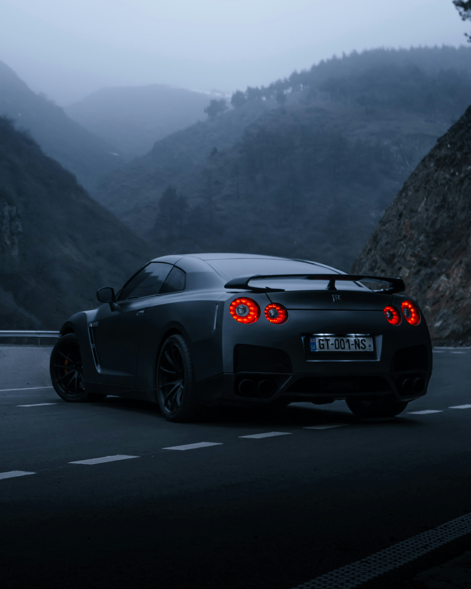
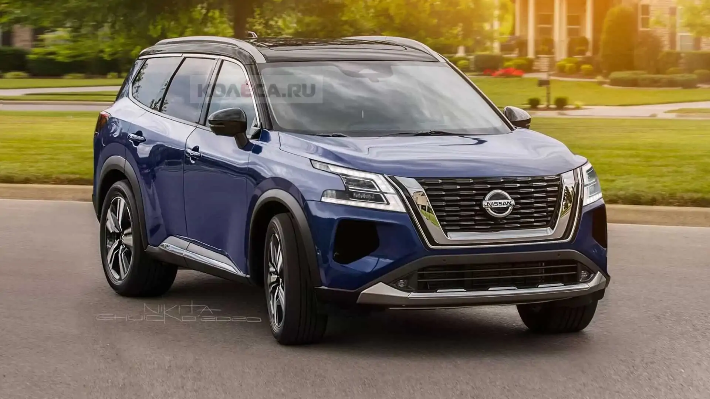

نيسان زد 2024
تعد نيسان زد 2024 من السيارات الرياضية المميزة التي تجمع بين القوة والتصميم العصري. تم تجهيزها بمحرك V6 مزدوج التوربو بسعة 3.0 لتر، ويولد 400 حصانًا، ما يتيح لها تسارعًا ممتازًا.

تعد نيسان زد 2024 من السيارات الرياضية المميزة التي تجمع بين القوة والتصميم العصري. تم تجهيزها بمحرك V6 مزدوج التوربو بسعة 3.0 لتر، ويولد 400 حصانًا، ما يتيح لها تسارعًا ممتازًا.
نيسان جي تي-آر 2024 تظل واحدة من أفضل السيارات الرياضية في العالم، مع محرك V6 مزدوج التوربو بسعة 3.8 لتر وقوة 565 حصانًا. تم تحسين الأداء في هذه النسخة لتقديم تجربة قيادة استثنائية.
نيسان باثفايندر 2024 هي سيارة دفع رباعي عائلية مميزة، تتميز بتصميم عصري وتقنيات متقدمة توفر الراحة والأداء الممتاز على الطرق الوعرة.
